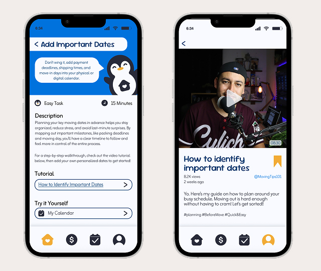
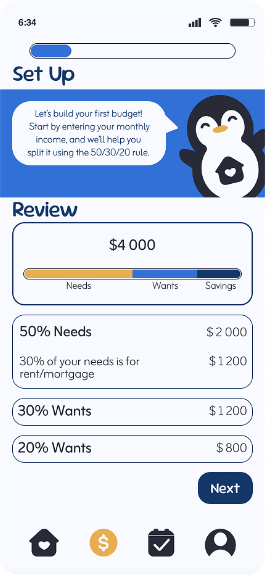
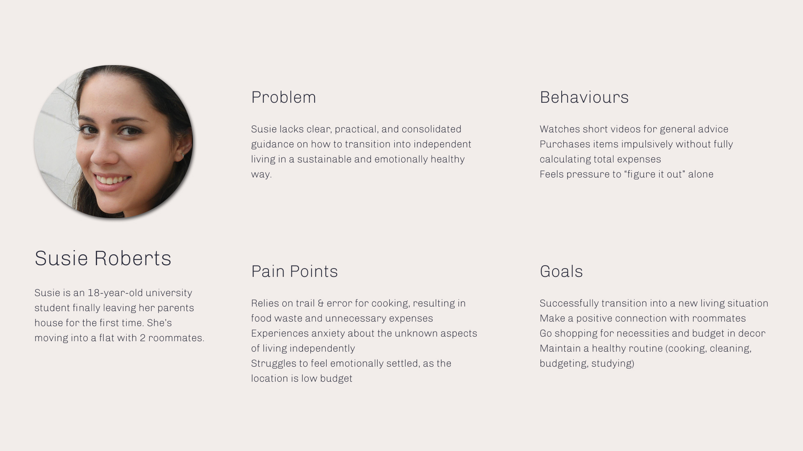
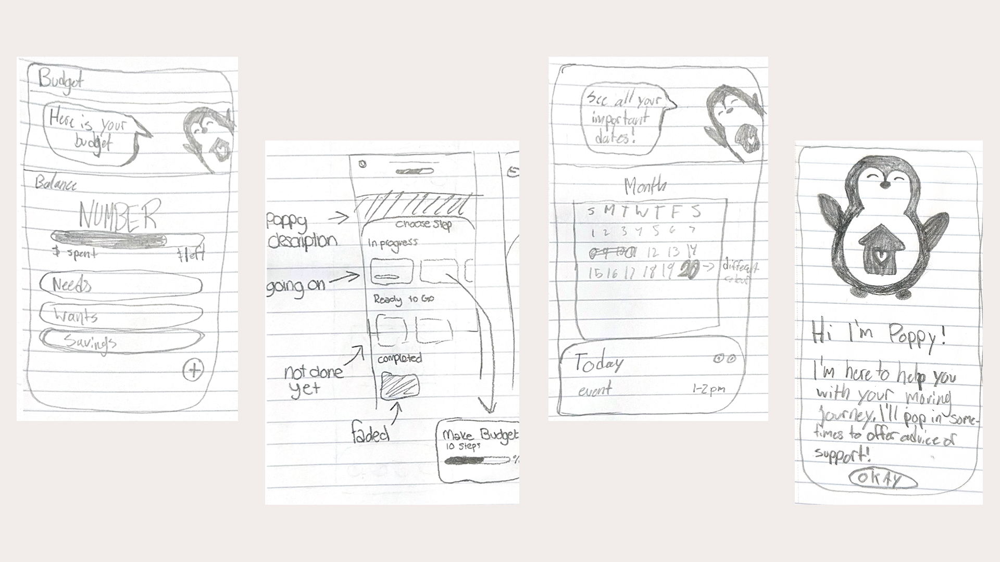
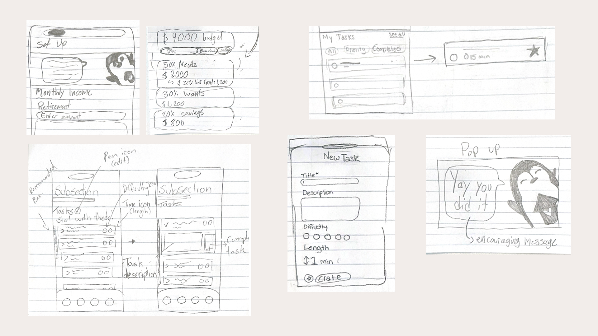
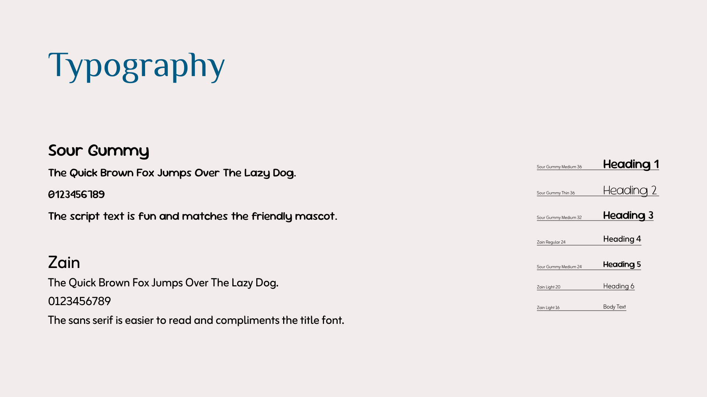
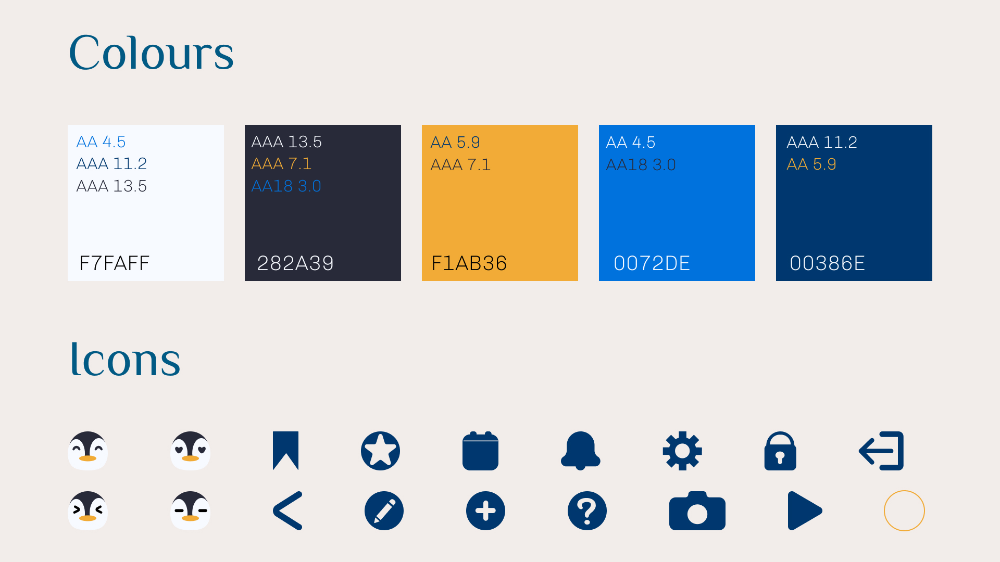
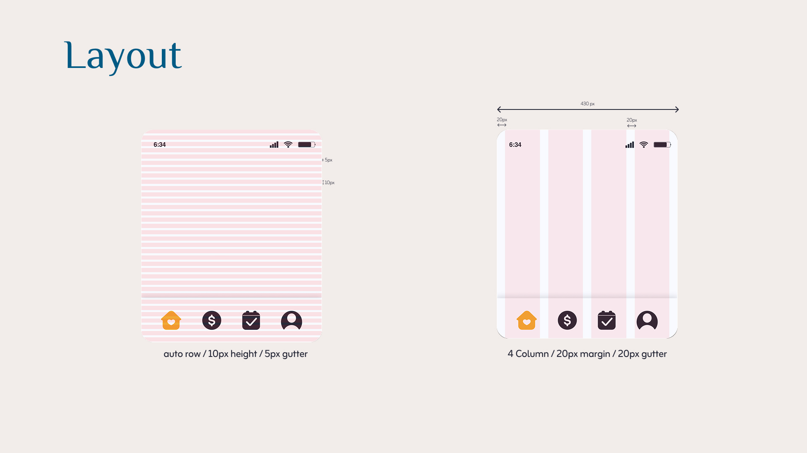
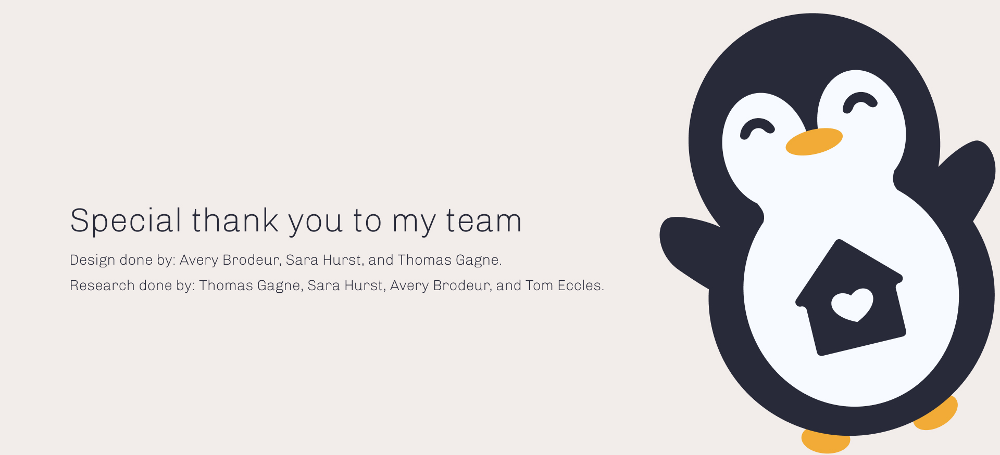

Project Brief
Look into a topic, find problems, and design a simple solution.
Solution
Our app helps first-time movers feel ready and less stressed. It includes simple budget tools, helpful guides, and a progress tracker to support each step. A friendly mascot also helps users feel less alone during the moving process.
Design
See Current Phase and Progress
Users can see their current phase and track their progress. The app shows what tasks are done and what is next. Users can tap into a task to see steps and stay on track.
View Task description & tutorials
Users can view a task and learn how to complete it. The app provides simple guides and video tutorials to help them understand each step. Users can then try the task themselves.

Create a Personalized budget with support
Users can create a budget step by step with support. The app guides them through needs, wants, and savings. It also shows their balance and gives feedback to help them stay within their budget.

Problem Statement
First-time movers often do not have a clear budget or the skills they need to live on their own. Because of this, they can feel stressed and unprepared during the moving process.
Research
Survey
We created a survey to learn about first-time movers. It included simple questions and was shared with students and the public. We received 75 responses. This helped us find common problems and understand how people prepare for moving.
Interview
We did 10 interviews to learn about people’s moving experiences. We spoke with first-time movers and a professional. We asked about how they prepare and learn new skills. This helped us understand their feelings and real-life challenges.
Findings & Insights
1. Shocks & Fears
First-time movers often feel scared and unsure. The emotional side of moving can be harder than expected.
2. Comfort of Home
People often focus on basic needs when choosing a place. This can make it harder for them to feel at home.
3. Budgeting
Many people do not know how much things will cost when moving out. This is because they do not have a clear budget or enough information.
4. Trial & Error
When living alone for the first time, people often learn by trial and error. This can take lots of time and be wasteful.
Persona

Sketches


Style Guide



Reflection
This project was a great learning experience. Working with a team over many weeks and getting regular feedback made it feel like a real-world project. It was exciting to see how our idea grew from the beginning to the final design. This project helped me learn more about the design process and how to create solutions for real problems.
Thank You For Reading!
